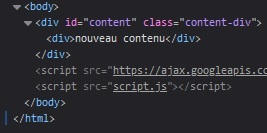
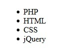

jQuery offre une multitude de méthodes permettant de créer de l'interaction. Nous allons voir les prémices de la programmation événementielle, à savoir comment agir sur le code HTML et CSS, comment parcourir des listes d'éléments et utiliser des données propres à jQuery.
La méthode html() permet de récupérer le code HTML d'un élément. Il s'agit de la réécriture d'innerHTML de JavaScript.
See the Pen Untitled by OpenSpirit (@OpenSpirit) on CodePen.
See the Pen Untitled by OpenSpirit (@OpenSpirit) on CodePen.
Attention, si on lui donne un argument, cette méthode servira alors à remplacer du contenu HTML.
See the Pen Untitled by OpenSpirit (@OpenSpirit) on CodePen.
Les éléments h3 et p seront remplacés par cette nouvelle div.
La méthode css() permet d'ajouter ou modifier les propriétés CSS d'un élément. Elle prend comme paramètres le nom de la propriété CSS et sa valeur.
See the Pen Untitled by OpenSpirit (@OpenSpirit) on CodePen.
Ici, la propriété color, avec blue comme valeur, est ajoutée à l'élément HTML h3.
Si une sélection retourne plusieurs éléments, la méthode each() permet de les parcourir.
L'intérêt est de pouvoir récupérer les éléments un à un pour leur appliquer une ou différentes méthode(s) selon les besoins.
Elle prend en paramètre une fonction anonyme prenant elle-même deux paramètres non obligatoires :
See the Pen Untitled by OpenSpirit (@OpenSpirit) on CodePen.
See the Pen Untitled by OpenSpirit (@OpenSpirit) on CodePen.
Dans cet exemple, this aurait pu être remplacé par element si ce dernier était passé en paramètre.
La méthode data() permet de créer des variables utilisables seulement par jQuery. Elles ne seront en aucun cas inclues dans le DOM. Elle prend comme paramètres :
See the Pen Untitled by OpenSpirit (@OpenSpirit) on CodePen.
Cette fois, les éléments de la liste sont vides.
Création par tableau :
See the Pen Untitled by OpenSpirit (@OpenSpirit) on CodePen.
Création par objet :
See the Pen Untitled by OpenSpirit (@OpenSpirit) on CodePen.
Dans cet exemple, la donnée languages est associée à l'élément ayant l'id #content, ce qui signifie que languages ne sera disponible que pour cet élément.
Nous l'utilisons ensuite pour remplir les éléments de la liste.
La méthode .val() permet de récupérer la valeur d’un élément d’un formulaire tels qu’un input, un select ou encore un textarea. Cette méthode ne prend pas de paramètres.
Ici on récupère la valeur d’un select pour l’option “foo”
See the Pen Untitled by OpenSpirit (@OpenSpirit) on CodePen.